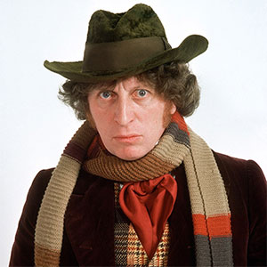

|
|||||||||||||
|
The Fourth DoctorPortrayed by Tom Baker The Fourth Doctor is the fourth incarnation of the protagonist of the long-running BBC television science fiction series Doctor Who. He was portrayed by Tom Baker for seven consecutive seasons and remains the longest-lived incarnation of the Doctor in the show's on-screen history, counting both the classic and modern series. Further to this, he is considered to be the most recognisable incarnations of the Doctor both in the United Kingdom and internationally. Within the series' narrative, the Doctor is a centuries-old Time Lord alien from the planet Gallifrey who travels in time and space in his TARDIS, frequently with companions. When the Doctor is critically injured, he can regenerate his body, changing his physical appearance and personality in the process. Baker portrays the fourth such incarnation, a whimsical and sometimes brooding individual whose enormous personal warmth is at times tempered by his capacity for righteous anger. His initial companion was intrepid journalist Sarah Jane Smith (Elisabeth Sladen), who had travelled alongside him in his previous incarnation, and she is later joined by surgeon Harry Sullivan (Ian Marter). His later companions included robotic dog K-9, savage alien warrior Leela (Louise Jameson), female Time Lord Romana (Mary Tamm and Lalla Ward), alien aristocrat Nyssa (Sarah Sutton), boy genius Adric (Matthew Waterhouse) and Australian flight attendant Tegan (Janet Fielding). Despite his obvious moments of whimsical charm, offbeat humour, permeated by his manic grin, the Fourth Doctor is more aloof and somber than his previous incarnations. He could become intensely brooding, serious and even callous. He also displays a darker edge to his personality and in The Invasion of Time he seems to cruelly taunt and play with the Time Lords, after his emergency inauguration as President. He also has a strong moral code, such as when he faces the dilemma of whether to destroy the Daleks in (Genesis of the Daleks) stating that if he did, he would be no better than the Daleks himself. He is truly appalled at the actions of the Pirate Captain in The Pirate Planet and refuses to listen to Professor Tryst's attempts to justify drug-running in order to fund his scientific work (Nightmare of Eden), simply telling him to go away. |
||||||||||||